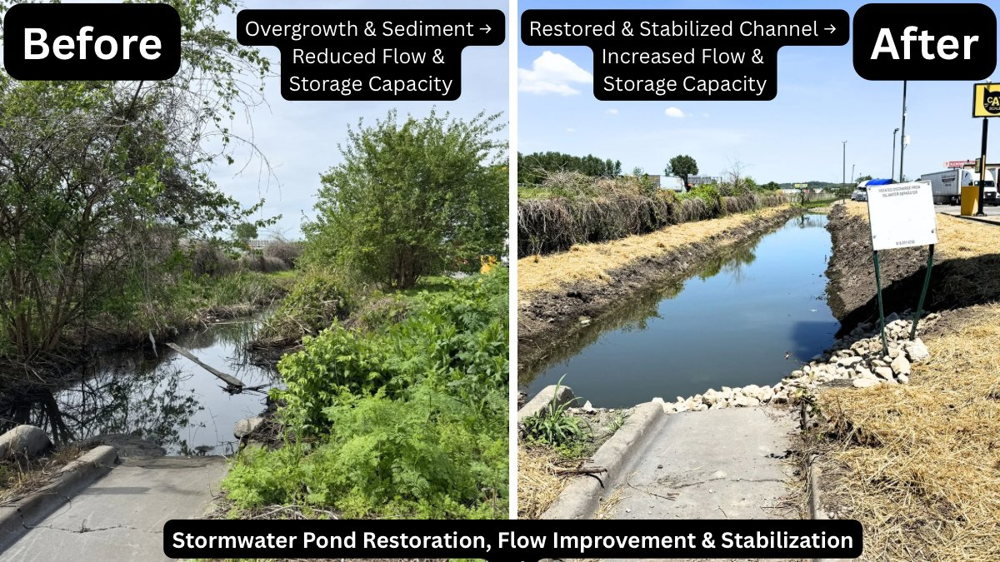

EnvironmentalStormwater Control Pond Restoration, Flow Improvement & Stabilization
An overgrown, sediment-filled stormwater channel had significantly reduced flow capacity and storage. Vegetation encroachment and accumulated sediment were choking the system, creating flood risk and regulatory exposure.
Cleared overgrowth, removed accumulated sediment, reshaped and stabilized the channel banks. All work was sequenced and documented to support regulatory compliance and demonstrate that corrective action was completed properly. Seed and straw stabilization applied post-grading to prevent erosion recurrence.
Restored channel to full flow capacity and storage volume. Banks stabilized against future erosion. Work was performed safely and in accordance with applicable site and environmental requirements. Client received a documented, defensible record of corrective action — reducing enforcement risk.